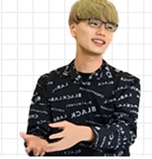
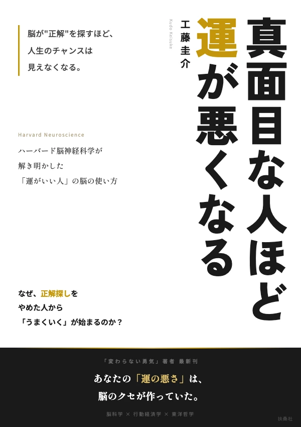
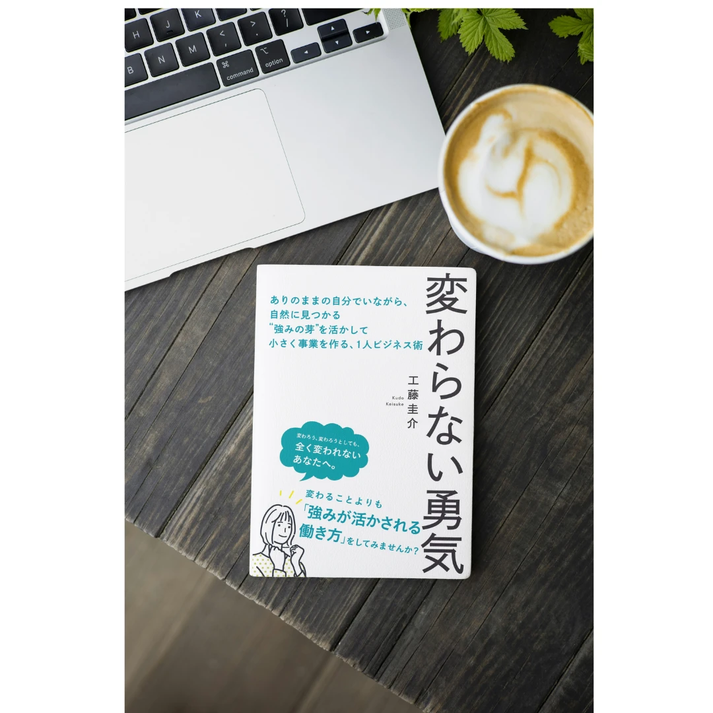

脳神経科学 × 気づきの科学
チャンスに気づける脳の作り方
運がいい人と悪い人の違いは、たった一つ。
目の前のチャンスに「気づけるか」どうか。
あなたの周りには、すでにチャンスが溢れている。
ただ、脳がそれを見せていないだけ。
※無料コンテンツをメールでお届けします

工藤圭介
ハーバード大学 脳神経科学プログラム修了
2026年6月 扶桑社より商業出版予定
答えは「脳の注意システム」にある
正解探しモード（狭い注意）
気づきモード（広い注意）
真面目な人ほど「正解探しモード」が強固。
だから、真面目な人ほど運が悪くなる。
でも、これは脳の「設定」の問題。書き換えられる。
ストーリーがあると、関連する兆候が自動的に見えるようになる。脳のRAS（網様体賦活系）がフィルターを変える。
「なんか気になる」を流さない。違和感は脳が送る「ここにチャンスがある」というシグナル。真面目な人ほど、効率重視でこれを流してしまう。
兆候に気づいたら、小さくギブする。フィードバックを観察する。この連鎖が雪だるま式に運を育てる。
ABOUT
合同会社スループットワールド代表
高卒 → ニート → うつ → ハーバード大学 脳神経科学プログラム修了。
500名のコミュニティ「SBC」を主宰。2026年6月に扶桑社より商業出版。
「正解」を持てなかった人間が、なぜハーバードにたどり着けたのか。
その答えが「気づき力」だった。
扶桑社より全国書店にて発売予定

NEW BOOK
脳科学が解き明かした「運の正体」。
正解を探すほどチャンスが見えなくなる仕組みと、
運を味方にする脳の使い方を体系化した一冊。

前著「変わらない勇気」
扶桑社より商業出版
※本LPの内容は書籍の一部を先行公開したものです
チャンスに気づける脳の作り方を
無料の特別コンテンツでお届けします。
※いつでも解除できます